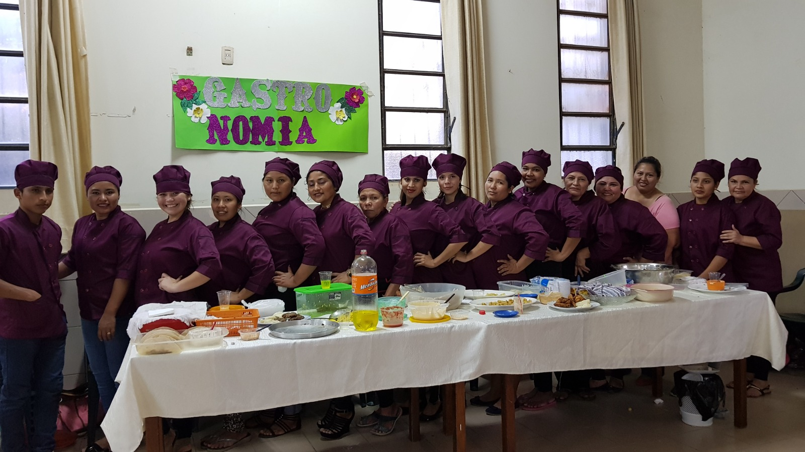
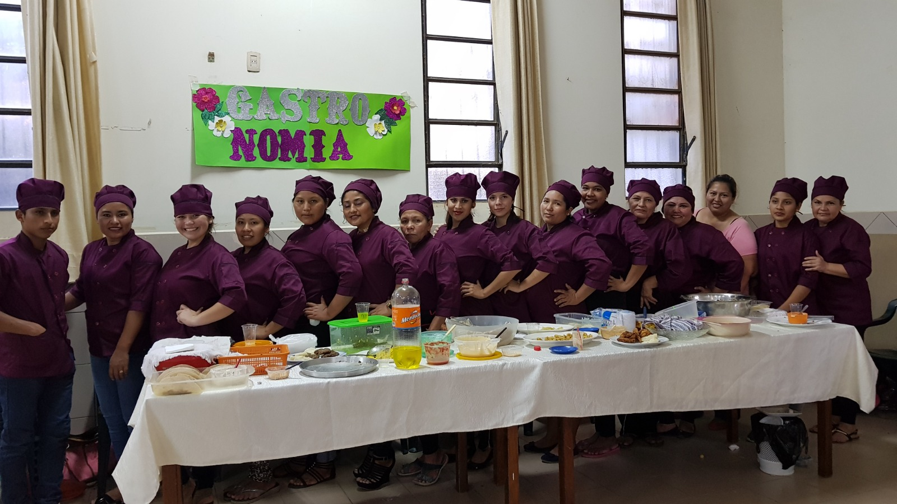

GASTRONOMIA
GASTRONOMÍA 1. Cocina Comercial 2. Carnes y Ensaladas 3. Cerdos y Pescados 4. Pollos y Arroces 5. Pastas 6. Cocina Nacional 7. Cocina Internacional 8. Cocina Saludable Horario: Martes y Jueves, Mensualidad: 100 Bs/módulo Material: Se cancela en cada clase. El instituto entrega los ingredientes que se emplean para cada receta, se devuelven en cada clase “comprando” el producto elaborado. Se pide un cuaderno para las lecciones, fotocopias de las recetas (lo da la profesora), un secador (paño de cocina). El uniforme para cada clase es: mandil, gorro o pañoleta para la cabeza. Deben presentarse con el cabello recogido y las uñas cortas, limpias y sin esmalte. No deben usar joyas.